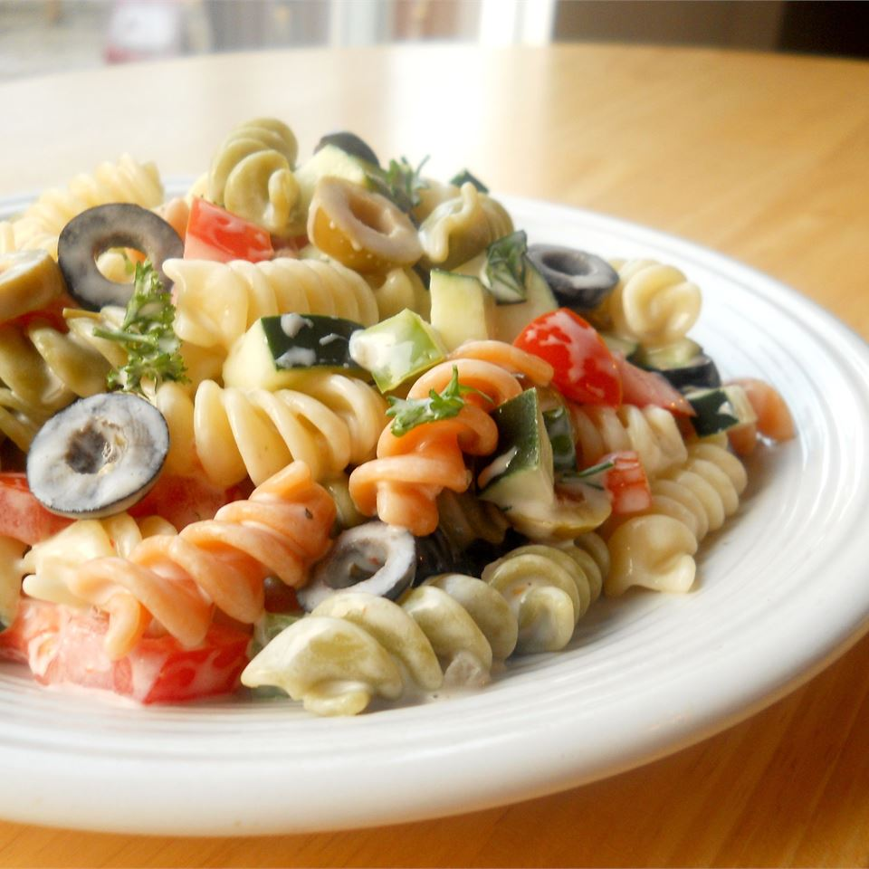

Home
Italian Confetti Pasta Salad

This recipe is so easy to make, and always such a hit! It is great for backyard barbecues. For best results, chill overnight.
Ingredients
- 1 cup mayonnaise
- 1 tablespoon red wine vinegar
- 1 teaspoon salt
- ¼ teaspoon ground black pepper
- 1 clove garlic, minced
- 11⁄2tablespoons chopped fresh basil
- 2 cups colored rotini pasta
- 1 cup chopped tomatoes
- ½ cup chopped yellow bell pepper
- ½ cup sliced black olives
Directions
- Cook pasta according to package directions. Rinse in cold water, and drain.
- In a large mixing bowl, whisk together mayonnaise, vinegar, salt, black pepper, and garlic until well blended. Mix in basil. Add pasta, tomatoes, bell peppers, and olives; fold gently until mixed. Chill several hours. Stir gently before serving.